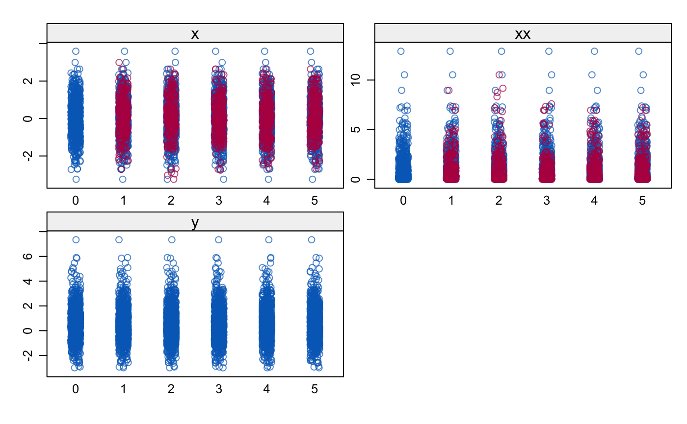
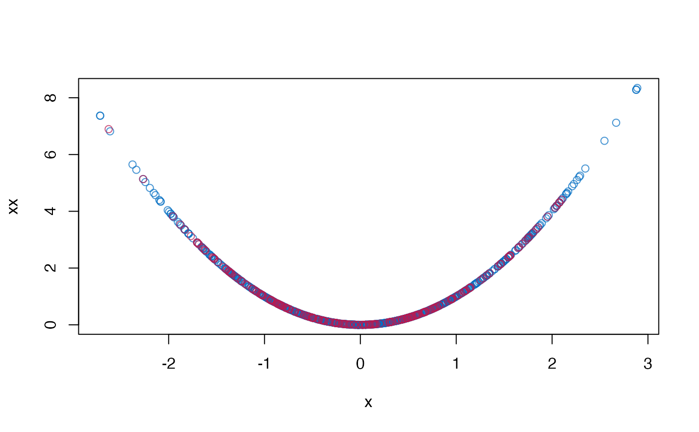

Imputes incomplete variable that appears as both main effect and quadratic effect in the complete-data model.
mice.impute.quadratic(y, ry, x, wy = NULL, quad.outcome = NULL, ...)
| y | Vector to be imputed |
|---|---|
| ry | Logical vector of length |
| x | Numeric design matrix with |
| wy | Logical vector of length |
| quad.outcome | The name of the outcome in the quadratic analysis as a
character string. For example, if the substantive model of interest is
|
| ... | Other named arguments. |
Vector with imputed data, same type as y, and of length
sum(wy)
This function implements the "polynomial combination" method. First, the polynomial combination \(Z = Y \beta_1 + Y^2 \beta_2\) is formed. \(Z\) is imputed by predictive mean matching, followed by a decomposition of the imputed data \(Z\) into components \(Y\) and \(Y^2\). See Van Buuren (2012, pp. 139-141) and Vink et al (2012) for more details. The method ensures that 1) the imputed data for \(Y\) and \(Y^2\) are mutually consistent, and 2) that provides unbiased estimates of the regression weights in a complete-data linear regression that use both \(Y\) and \(Y^2\).
There are two situations to consider. If only the linear term Y
is present in the data, calculate the quadratic term YY after
imputation. If both the linear term Y and the the quadratic term
YY are variables in the data, then first impute Y by calling
mice.impute.quadratic() on Y, and then impute YY by
passive imputation as meth["YY"] <- "~I(Y^2)". See example section
for details. Generally, we would like YY to be present in the data if
we need to preserve quadratic relations between YY and any third
variables in the multivariate incomplete data that we might wish to impute.
mice.impute.pmm
Van Buuren, S. (2018).
Flexible Imputation of Missing Data. Second Edition.
Chapman & Hall/CRC. Boca Raton, FL.
Vink, G., van Buuren, S. (2013). Multiple Imputation of Squared Terms. Sociological Methods & Research, 42:598-607.
Other univariate imputation functions:
mice.impute.cart(),
mice.impute.lasso.logreg(),
mice.impute.lasso.norm(),
mice.impute.lasso.select.logreg(),
mice.impute.lasso.select.norm(),
mice.impute.lda(),
mice.impute.logreg.boot(),
mice.impute.logreg(),
mice.impute.mean(),
mice.impute.midastouch(),
mice.impute.mnar.logreg(),
mice.impute.norm.boot(),
mice.impute.norm.nob(),
mice.impute.norm.predict(),
mice.impute.norm(),
mice.impute.pmm(),
mice.impute.polr(),
mice.impute.polyreg(),
mice.impute.rf(),
mice.impute.ri()
Mingyang Cai and Gerko Vink
require(lattice) #> Loading required package: lattice # Create Data B1 <- .5 B2 <- .5 X <- rnorm(1000) XX <- X^2 e <- rnorm(1000, 0, 1) Y <- B1 * X + B2 * XX + e dat <- data.frame(x = X, xx = XX, y = Y) # Impose 25 percent MCAR Missingness dat[0 == rbinom(1000, 1, 1 - .25), 1:2] <- NA # Prepare data for imputation ini <- mice(dat, maxit = 0) meth <- c("quadratic", "~I(x^2)", "") pred <- ini$pred pred[, "xx"] <- 0 # Impute data imp <- mice(dat, meth = meth, pred = pred, quad.outcome = "y") #> #> iter imp variable #> 1 1 x xx #> 1 2 x xx #> 1 3 x xx #> 1 4 x xx #> 1 5 x xx #> 2 1 x xx #> 2 2 x xx #> 2 3 x xx #> 2 4 x xx #> 2 5 x xx #> 3 1 x xx #> 3 2 x xx #> 3 3 x xx #> 3 4 x xx #> 3 5 x xx #> 4 1 x xx #> 4 2 x xx #> 4 3 x xx #> 4 4 x xx #> 4 5 x xx #> 5 1 x xx #> 5 2 x xx #> 5 3 x xx #> 5 4 x xx #> 5 5 x xx # Pool results pool(with(imp, lm(y ~ x + xx))) #> Class: mipo m = 5 #> term m estimate ubar b t dfcom #> 1 (Intercept) 5 -0.05304664 0.0017547291 2.438149e-04 0.0020473070 997 #> 2 x 5 0.44435765 0.0010903497 2.796007e-04 0.0014258706 997 #> 3 xx 5 0.52371832 0.0006205929 7.572287e-05 0.0007114604 997 #> df riv lambda fmi #> 1 159.27848 0.1667368 0.1429086 0.1534719 #> 2 65.97647 0.3077185 0.2353095 0.2574820 #> 3 191.19549 0.1464204 0.1277196 0.1367031 # Plot results stripplot(imp)  plot(dat$x, dat$xx, col = mdc(1), xlab = "x", ylab = "xx") cmp <- complete(imp) points(cmp$x[is.na(dat$x)], cmp$xx[is.na(dat$x)], col = mdc(2)) 